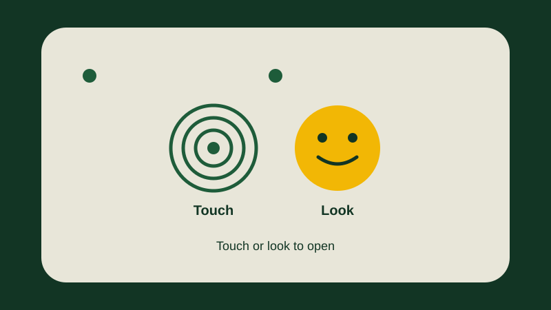

How to Set Up Fingerprint and Face Unlock on Your Samsung Galaxy
Marium is 66 years old. Every time she picks up her phone, it asks her for a four-digit PIN. She made the PIN herself, and she knows it well, but her fingers are slow on the small numbers, and twice she typed it wrong and the phone made her wait. Once, in a crowded shop, she typed it while a stranger stood behind her, and she felt nervous the whole time. "There must be an easier way," she said to her daughter Sana.
Sana took the phone and tapped a few places in Settings. Then she held Marium's thumb on the lower half of the screen, and asked her to lift it and press it again, several times. "Now look at the screen," Sana said. Marium looked, and the phone opened. No numbers, no typing. "Your thumb is your key now," Sana said.
That is what this guide shows you. Fingerprint unlock means your phone opens when it feels your finger. Face unlock means it opens when it sees your face. Both are quicker than typing a PIN, and both are easier on tired eyes and stiff fingers. You will keep your PIN as a backup, because the phone still needs it sometimes.

What fingerprint and face unlock are
Think of your phone as a small house with a locked front door. A PIN is like a key you have to type in numbers. A fingerprint is like a key made from your own thumb — you just touch the door, and it knows it is you. Face unlock is like a doorman who knows your face — you look at the door, and it opens.
Your fingerprint is the pattern of tiny lines on the tip of your finger. Nobody else has the same pattern, not even your children. Your phone remembers the pattern when you set it up, and then it checks each time you touch it. The pattern stays on your phone. It is not sent anywhere, and nobody else can see it.
Face unlock works in a similar way. The phone looks at your face through the small camera at the top of the screen, and remembers the shape of it. When you look at the phone, it checks the shape, and opens if it matches. It needs light to see you, so it works best in a lit room or outside in the daytime.
Before you start: keep a PIN ready
Before you set up your finger or your face, the phone will ask you to make, or type, a PIN, a pattern, or a password. This is your backup key. If your finger is wet, or your face cannot be seen in the dark, the phone will ask for this backup instead. Do not skip it, and do not forget it.
- Know your PIN. If you already have a PIN, make sure you remember it before you start. If you do not have one, the phone will ask you to make one, and to type it twice. Choose four numbers you will remember, but do not use your birth year or 1234.
- Write the PIN on paper, and keep the paper at home. Do not save it in your phone. A small notebook in a drawer is enough. Tell one person you trust where it is. If you ever forget the PIN, you will need that paper.
- Wash and dry your hands. A wet or greasy finger does not work well, and a clean, dry thumb gives the best result.
- Sit in good light. For face unlock, sit near a window, or in a room with the light on. The phone has to see your face clearly, so face the light, and do not sit with a bright window behind you.
- Take off dark glasses for a moment. Wear your normal reading glasses, because you will register your face wearing them. But dark sunglasses, a scarf over your nose, or a hat pulled low will hide your face, so take them off while you set it up.
Method 1: set up your fingerprint
On most Galaxy phones, the fingerprint sensor — the place that feels your finger — is under the screen, near the bottom, or it is a small key on the side of the phone, or a small circle on the back. The phone will show you where it is when you set it up. Do not worry, if you do not know where it is. Just follow the pictures on the screen, slowly.
- Open Settings. It is the app with a grey gear-wheel picture. If you cannot find it, swipe the home screen down with two fingers and tap the small gear picture at the top right, or type "Settings" in the search box at the top of your app list.
- In Settings, tap the search box at the top, and type "Fingerprint". Tap the result that says something like "Fingerprint" or "Add fingerprint". If nothing appears, search for "Biometrics" instead.
- The phone may ask for your PIN first. Type it and tap OK. This proves that you are the owner of the phone, not a stranger.
- Tap "Add fingerprint", or a similar button with a plus sign. Read the short text on the screen, then tap "Register" or "Continue".
- The phone will show you where to put your finger. It may show a picture of a phone with a bright circle lower down on the screen, or it may say "place your finger on the sensor". Put your thumb on that place, and press it flat, as you would press an ink stamp.
- Lift your finger, and press it again. The phone will buzz, or the circle on the screen will fill a little more. Keep lifting and pressing, about six to ten times, until the circle is full, or the phone says it is done. Move your thumb a little each time, so the phone learns the sides and the tip of your thumb, not only the middle. Press gently.
- When the phone says the fingerprint is added, tap "Done". Your thumb is now registered. Tap the screen lock button to close the phone, then press your thumb on the same place. The phone should open. If it does not open the first time, try again, slowly. A slow press works better than a fast one.
- Before you finish, try opening the phone with your other hand too. If you usually hold the phone in your right hand, your right thumb is the one to register first.
If the phone keeps saying it cannot read your finger, do not keep pressing harder. Stop, and read the section below called "If it does not recognise you". Often, the answer is simple: wet hands, a dirty screen, or a screen cover that blocks the sensor.
Add a second fingerprint
One finger is enough, but two are better. If you cut your thumb while cooking, or if you are carrying shopping in one hand, the other thumb can still open the phone. Adding a second fingerprint takes less than a minute, because the first one taught you how it works.
- Open Settings, search for "Fingerprint", and tap "Add fingerprint" again. Type your PIN when it asks.
- This time, use the thumb of your other hand, or the index finger of the hand you use most. Some people register their index finger instead of the thumb, because it feels natural to point at the screen.
- Lift and press again, several times, moving the finger a little each time, until the circle fills and the phone says it is done. Tap "Done".
- Test it. Close the phone, and open it with the new finger. Both fingers should work now.
Method 2: set up face unlock
Face unlock is the quickest way to open your phone, because you only have to look at it. It works best in good light, and it works best if you hold the phone at face level, not in your lap. Do not expect it to work well in a dark bedroom. That is normal, and it is also why your PIN stays as a backup.
- Open Settings, tap the search box at the top, and type "Face". Tap the result that says something like "Face recognition" or "Face unlock". If nothing appears, search for "Biometrics" instead.
- The phone may ask for your PIN first. Type it and tap OK.
- Tap "Register face", or a similar button. Read the short text on the screen, then tap "Continue".
- Hold the phone up in front of your face, about one arm's length away. Look straight at the camera, the small hole at the top of the screen, and look at the dot on the screen, not at the room behind the phone.
- The phone should draw a small circle around your face, or tell you to move closer or further away. Turn your head slowly in a small circle, if it asks you to, so it can learn the sides of your face. It takes about ten seconds.
- When the phone says it is done, tap "Done". Then close the phone, and hold it up to your face again. It should open. If it opens too slowly, lift it a little closer, or move towards the light.
A warning about glasses. If you wear glasses most of the time, register your face while you are wearing them. If you register without glasses and then wear them, it may still work, but it is less likely. If you start wearing new thick-framed glasses and face unlock stops working, just register your face again wearing the new glasses. It takes one minute.
Fingerprint or face — which one is safer?
Both are fine for opening your phone, but they are not equal. Your fingerprint is the safer of the two. Your face is the easier of the two. Here are the plain facts, so you can choose for yourself.
- Fingerprint. Only your finger opens the phone, and only yours has this exact pattern. It also works in the dark, because the phone does not need to see anything. For most seniors, this is the best one for every day, and the one to trust when it matters — for example, when a banking app asks you to prove who you are.
- Face unlock. Face unlock is faster, and you do not have to touch anything, which is good if your hands are wet or you are holding a bag. But it is less secure than a fingerprint, and it needs light, so it may not work in the dark. Use face unlock to open your phone, and fingerprint or PIN for banking apps and anything with money.
Marium kept both, but she relies on her fingerprint most of the day. She uses face unlock in the morning, when her hands are busy with breakfast, and fingerprint when she leaves the house. You can do the same, or use only one. Setting both up does not force you to use both.
Practise with Marium
Let us practise with Marium. She sits at her kitchen table, near a window, with clean, dry hands and her PIN written in the notebook in her drawer. She opens Settings, searches for "Fingerprint", types her PIN, and presses her right thumb on the bright circle eight times, moving it a little each time, until the circle fills. She locks the phone and presses her thumb again. It opens. Then she searches for "Face", holds the phone up, looks at the dot, and turns her head slowly to both sides. Ten seconds later, it is done.
Now try the same yourself: finger first, then face, testing both, slowly. If one of them fails, try again tomorrow. There is no rush.
If it does not recognise you
Sometimes the phone does not open, and it asks for your PIN instead. Do not panic. It does not mean the phone is broken, and it does not mean the setting is lost. Work through these checks, in order. Most problems are one of the following.
- Wet, greasy, or wet fingers. A finger wet from washing, cooking, or the rain does not read well. The phone often says "no match" for the first try. Dry your hands, wipe the phone's screen or sensor, and try your other thumb, or your PIN, this one time.
- Dry hands, or a cut finger. Very dry skin, or a cut on the fingertip, can fail too. A little hand cream, rubbed in well, often helps. While a cut heals, use the other finger you registered, or use the PIN once, and test again in a few days.
- Dirt or a screen protector. A dusty or greasy screen can block the sensor, so wipe it with a clean, dry, soft cloth. If you added a thick screen protector, the fingerprint can stop working, because the sensor cannot see through the glass. Take it off and try again, or ask the shop that put it on.
- You are pressing in the wrong place. On some screens, the place to press is lower than you think. If the phone shows a bright circle, press there, not in the middle of the screen. If the sensor is on the side button, press your thumb on that button, not on the glass.
- Dark room for face unlock. Face unlock needs light. In a dark room it may fail completely. Step into the light, lift the phone higher, and look at the screen. At night it is normal to use your fingerprint or PIN instead.
- New glasses, a hat, or a scarf. A thick hat, a scarf over the nose, or new dark glasses can confuse the camera. Take them off and try again, or register your face again wearing the new glasses.
- You tried five times and the phone says "locked". Then the phone will ask for your PIN. That is what the backup is for. Tap the PIN pad, type your PIN, and the phone will open. Fingerprint and face unlock will work again on the next try. This is not a punishment. It is the phone making sure that it is you.
If you are locked out
Being locked out is frightening, but it is almost always easy to undo. First, try your PIN again, slowly. One wrong finger-tap sometimes makes the phone ask for the PIN, and many people keep typing it wrong because they are in a hurry. Breathe, tap the numbers slowly, and check the screen after each number.
If the PIN alone does not work, and the phone says it is locked for several minutes, wait. Put the phone down, and try again after the wait is over. If you really cannot remember your PIN, look at the paper where you wrote it. That is why the paper exists.
If you have forgotten the PIN completely, and your finger and face do not work either, do not pay anyone online who promises to open your phone for a fee. Many of those messages are scams. Read How to Spot a Scam Call or Message. Instead, take the phone, with your purchase receipt if you have one, to the shop where you bought it, and explain what happened. There may be an official way to open it, but do not trust anyone who says they can open it in secret. No genuine guide can promise to unlock a phone for you.
Common mistakes
- Setting up your fingerprint without remembering your PIN. The phone will still ask for your PIN sometimes, and it will ask for it again if your finger fails five times. If you do not remember your PIN, you are stuck. Write the PIN down before you start, and keep it at home.
- Pressing too hard, or pressing the same place every time. The phone learns a map of your finger. If you press the same small place ten times, the map is small, and a different angle of the same finger will not match. Move the finger a little each time, so the map is wide.
- Registering the finger while it is wet. A wet fingerprint is a different picture. If you register a wet thumb, the phone may not recognise it when it is dry. Register with a clean, dry hand.
- Registering your face in a dark room. In a dark room, the camera cannot see you clearly, so the face it remembers is wrong. Register near a window, or in a room with the light on.
- Using one finger only, then cutting it. A cut thumb can stop working for a week. Register a second finger when you set the first one up, or the next day, so you are ready for that.
- Believing that face unlock is as safe as a fingerprint. A face alone is not enough for important things. Use your fingerprint, or your PIN, for banking apps and for any payment. Face unlock is for opening your phone, not for paying money.
- Buying a screen protector that blocks the sensor. The sensor on most phones sits under the screen, and a thick glass protector can hide your finger from it. If you change your protector and your fingerprint stops working overnight, that is usually the reason. Ask the shop for a protector that leaves the sensor working.
Frequently asked questions
Can someone unlock my phone with a picture of me?
A simple face unlock can be confused by a clear photograph of your face, so a photo is a risk. No face unlock is as safe as a fingerprint. If you are worried, turn face unlock off and use only your fingerprint and PIN. A fingerprint cannot be copied from a photo.
Will a screen protector stop fingerprint unlock?
It can, if the protector is thick glass. The sensor is under the screen on most Galaxy phones, and a thick protector blocks it. If a new protector stops the fingerprint from working, remove the protector and test again. If it works again without it, ask the shop for a thinner protector or one that says it works with a fingerprint sensor.
Can I pay with my fingerprint?
Yes, many banking and payment apps use your fingerprint to prove it is you. It is the same fingerprint you registered on the phone. If the app asks you to set up a lock, choose fingerprint there too, and always keep your PIN as the backup.
What if I hurt the finger I registered?
Use your second registered finger, or your PIN, until the first one is healed. If you never registered a second finger, add one now, before you need it, even if your main thumb works fine today. You will be glad of it on the day you cut yourself.
Does face unlock work in the dark?
Usually not, or only slowly. Some Galaxy phones light up the screen to see your face in the dark, but most work better in light. Do not be alarmed when face unlock fails at night. Just press your thumb instead, or type your PIN. In the morning, in good light, the face will work again.
Can I turn it off again?
Yes. Open Settings, search for "Fingerprint", type your PIN, and remove the fingerprint you registered. Do the same for face unlock. Removing them does not change anything else, and you can set them up again whenever you want. Your PIN will still be there as your lock.
If the words on your screen look different
Menu words may look a little different on your phone. That is normal. Samsung makes many Galaxy models — A-series and S-series — and they do not all show the exact same words. Your phone company, called a carrier, can also change some words, and so can your country or region. And your One UI version matters. In November 2026, some phones use One UI 8, some use One UI 8.5, and some use One UI 9, depending on the model and the region. That is why this guide tells you to tap the search box at the top of Settings and type "Fingerprint" or "Face", instead of giving you one fixed path through the menus.
If the search finds nothing at all, try the other word this guide gives you: if "Fingerprint" gives nothing, search for "Biometrics". And if the sensor is in a different place on your phone, trust the picture on the screen, not the drawing in this guide. The bright circle on your own phone is the real place to press.